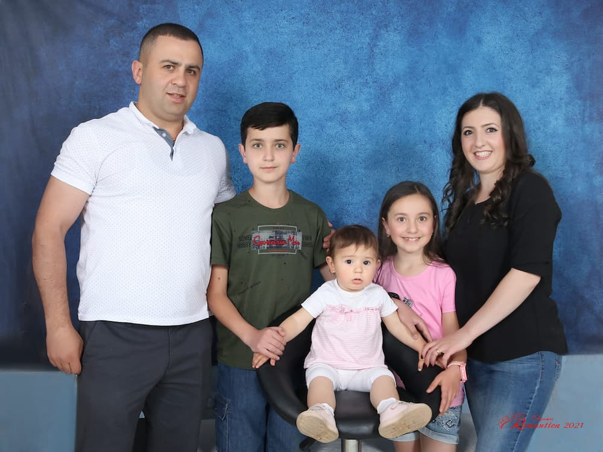

Ani Harutyunyan | WDD 130
Hello! My name is Ani. I was born in 1990 in a small beautiful town Vanadzor, Armenia. I was the third child of four siblings. I started school when I was six but shortly after that in the year 1999 my parents sent me to India, West Bengal, Kolkata to continue my education there. In India, I attended an Armenian school that was known as Armenian College and Philanthropic Academy. I was blessed to be able to learn English during my school years. I was doing quite well at school and besides that, I was able to participate in some sports. I played basketball in school and I was given the honor to be the captain of the team. I also learned Indian dancing and had the opportunity to perform in New Delhi and Hong Kong. In the year 2007, I came back to Armenia and completed my last year of school here in Armenia. In the same year, I met the missionaries and I was excited to learn about the gospel. Shortly after I decided to get baptized this was one of my best decisions because then came all the blessings that were promised to those who keep and follow their covenants. I met my husband who was a returned missionary in the year 2009 in a young single adult’s activity. Shortly after that, we were married and sealed in the temple and were blessed with 3 beautiful children, a son who is 13, and our daughters are 11 and 4.